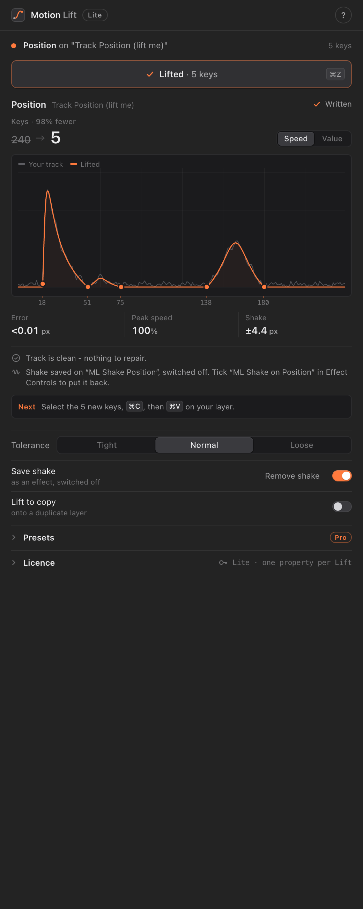

Track the move in your reference, select the tracked property, click Lift. Motion Lift replaces hundreds of tracked keyframes with a few clean ones whose speed curve matches the original, and keeps the handheld shake on a separate control.
One download for everyone: it runs as Lite until you enter a Pro key. After Effects 2022 or later, macOS.

With After Effects' own tracker, Mocha AE or Motion Sketch, so the property has a key on every frame.
Motion Lift finds where each move starts and stops and fits Bezier eases to the reference's speed. One undo step.
You get a few ordinary keyframes. The shake goes on an "ML Shake" effect, switched off, to keep or delete.
| Lite free | Pro $3 one-time | |
|---|---|---|
| Lift a tracked move into a few eased keys | One property at a time | Every selected property at once |
| Speed / value graph, error and peak speed | Yes | Yes |
| Shake split onto its own effect | Yes | Yes |
| Track for me (finds cuts, camera moves and moving things, adds keyed nulls) | Yes | Yes |
| Preset library: save a lifted ease, apply it anywhere | No | Yes |
Copy an ease as CSS cubic-bezier() | No | Yes |
| Updates | Yes, in the panel | Yes, in the panel |
Prices in US dollars; taxes are added at checkout where they apply. Checkout and receipts are handled by Lemon Squeezy, our reseller.
Get MotionLift-x.y.z.zxp from the latest release (Pro buyers also get it with their receipt).
With a free ZXP installer such as aescripts' ZXP Installer or Anastasiy's Extension Manager. Restart After Effects, then Window > Extensions > Motion Lift.
Open Licence at the bottom of the panel, paste the key from your receipt email, click Activate.
The panel checks for a new version once a day and installs it when you click Install. Restart After Effects to finish.
All sales are final. If your key won't activate or Pro doesn't work on your computer, email us and we'll sort it out.
After Effects 2022 (22.0) or later on macOS. Windows: coming later. Track for me also needs the free tool
uv; the panel tells you how to get it.
Questions, a key that won't activate, or a refund: Footy1x.ae@gmail.com. We usually answer within two days.